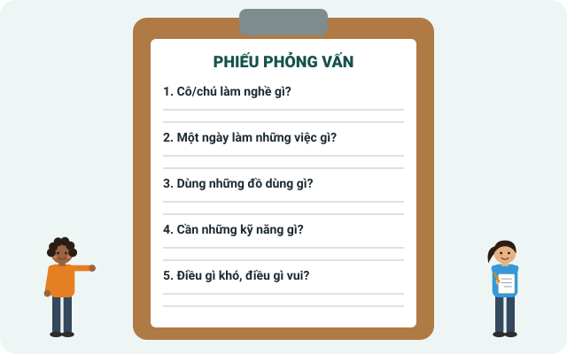
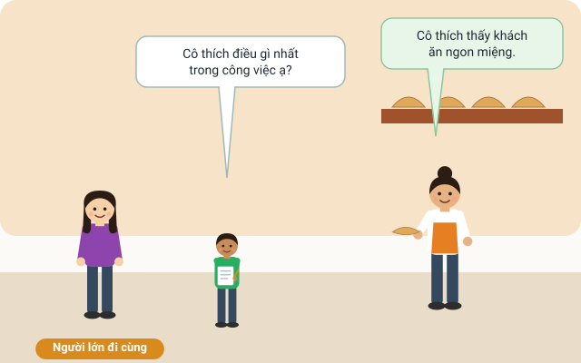
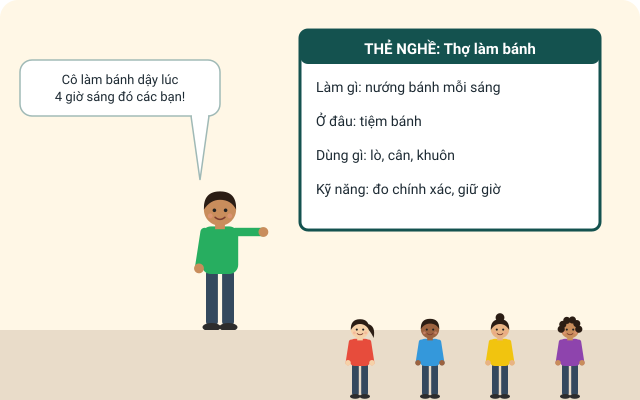

K7 · Tự học và phát triển nghề nghiệp › Bậc 1 Làm quen
Phỏng vấn người làm nghề
Dành cho người lớn. Quy tắc an toàn, đọc trước khi cho trẻ phỏng vấn:
- Chỉ phỏng vấn người quen của gia đình, hoặc người do nhà trường mời.
- Luôn có người lớn đi cùng hoặc ngồi cạnh. Có thể phỏng vấn qua điện thoại, bật loa ngoài.
- Muốn chụp ảnh hay ghi âm: xin phép trước.
- Không đăng ảnh, ghi âm hay tên người được phỏng vấn lên mạng khi chưa được đồng ý.
Chuẩn bị: Phiếu phỏng vấn, bút, một Thẻ nghề trống. Bạn hẹn giúp trẻ khoảng 15 phút với người được phỏng vấn.
1. Mục tiêu
- Chuẩn bị 5 câu hỏi và phỏng vấn một người làm nghề, có người lớn đi cùng.
- Kể lại nghề đó trong 2 phút bằng Thẻ nghề.
2. Khởi động truy xuất
- Nhận việc gồm 3 bước nào?
- Một câu báo sớm cần nói rõ 2 điều gì?
Đáp án
- Nghe hết, nhắc lại, ghi hạn.
- Phần nào có thể chậm, và mình cần gì.
Xem lại: Nhận việc và giữ hẹn.
3. Giải thích
Cách hiểu một nghề tốt nhất là hỏi người đang làm nghề đó. Sách và mạng cho biết nhiều điều. Nhưng chỉ người làm nghề mới kể được một ngày làm việc thật.
Phỏng vấn là hỏi chuyện có chuẩn bị. Em làm theo 4 bước:
Phỏng vấn 4 bước
- Chuẩn bịChọn người quen, nhờ người lớn hẹn, viết câu hỏi.
- Hỏi và ngheGhi ý chính, hỏi thêm "vì sao?".
- Cảm ơnCảm ơn người đã dành thời gian.
- Kể lạiLàm Thẻ nghề, kể trong 2 phút.
Câu hỏi đóng và câu hỏi mở. Câu hỏi đóng chỉ cần trả lời "có" hoặc "không". Ví dụ: "Cô có thích nghề này không?" Câu hỏi mở mời người kia kể. Ví dụ: "Điều gì làm cô thích nghề này?" Hãy dùng nhiều câu hỏi mở.

Năm câu trên phiếu khớp với 5 ô của Thẻ nghề. Riêng câu 5 giúp em biết thêm cảm nhận của người làm nghề.
Quy tắc an toàn khi phỏng vấn
4. Ví dụ tại nơi làm việc Việt Nam
Tình huống giả định. Khoa (lớp 7) muốn tìm hiểu nghề làm bánh. Mẹ Khoa hẹn cô Bích, hàng xóm có tiệm bánh, vào chiều thứ Bảy.
Mẹ ngồi cùng Khoa. Khoa hỏi 5 câu trên phiếu và ghi ý chính.

Khi cô Bích kể phải dậy từ 4 giờ sáng, Khoa hỏi thêm: "Vì sao cô phải dậy sớm vậy ạ?" Cô giải thích: bánh phải nướng xong trước giờ khách đi làm. Cuối buổi, Khoa cảm ơn cô.
Về nhà, Khoa làm Thẻ nghề "Thợ làm bánh". Hôm sau, Khoa kể cho lớp trong 2 phút:
Khung kể 2 phút. Em đã phỏng vấn [ai], làm nghề [gì]. Mỗi ngày, cô (chú) [làm gì]. Cô (chú) dùng [đồ dùng]. Nghề này cần kỹ năng [kỹ năng]. Điều em bất ngờ nhất là [điều gì].

Vì sao cách này tốt: Khoa phỏng vấn người quen, có mẹ đi cùng. Khoa hỏi thêm "vì sao" nên hiểu sâu hơn. Tự kể lại giúp Khoa nhớ lâu hơn so với chỉ đọc lại phiếu.
5. Thực hành
Chọn một người lớn trong gia đình: bố, mẹ, ông bà, cô chú. Viết 5 câu hỏi, ít nhất 3 câu hỏi mở. Phỏng vấn trong 10–15 phút, rồi kể lại theo khung 2 phút.
Luyện trước: đổi 2 câu hỏi đóng sau thành câu hỏi mở.
- "Bố có làm việc với máy tính không?"
- "Công việc của mẹ có khó không?"
Gợi ý 1
Câu hỏi mở thường bắt đầu bằng: như thế nào, vì sao, điều gì, kể cho con nghe về…
Gợi ý 2
Sau mỗi câu trả lời thú vị, hỏi thêm một câu "vì sao?".
Lời giải mẫu
- "Bố dùng máy tính để làm những việc gì?"
- "Phần nào trong công việc làm mẹ thấy khó nhất? Vì sao?"
6. Tự kiểm tra
Chọn đáp án. Mỗi lựa chọn đều có giải thích.
Câu 1. Câu nào là câu hỏi mở?
-
Chưa đúng. Câu này chỉ cần trả lời có hoặc không.
-
Đúng. Đúng. Câu hỏi mở mời người kia kể nhiều hơn.
-
Chưa đúng. Câu này thường chỉ được trả lời ngắn, như "lâu rồi".
Câu 2. Em muốn phỏng vấn một người làm nghề. Cách nào an toàn?
-
Chưa đúng. Không gặp người lạ một mình. Luôn có người lớn đi cùng.
-
Đúng. Đúng. Đây là quy tắc an toàn của bài.
-
Chưa đúng. Không liên lạc riêng với người lạ trên mạng.
Câu 3. Phỏng vấn xong, em muốn đăng ảnh cô thợ làm bánh lên mạng. Em nên làm gì?
-
Chưa đúng. Cần được cô đồng ý trước khi đăng ảnh của cô.
-
Đúng. Đúng. Ảnh của một người là thông tin của người đó.
-
Chưa đúng. Không ghi tên vẫn có thể nhận ra cô qua ảnh.
Câu 4. Sau buổi phỏng vấn, việc nào giúp em nhớ lâu nhất?
-
Chưa đúng. Không dùng lại thì em sẽ quên nhanh.
-
Đúng. Đúng. Tự nhớ lại và kể ra giúp nhớ lâu hơn đọc lại.
-
Chưa đúng. Đọc lại có ích ít hơn tự nhớ và kể lại.
Câu 5. Ôn Bài 5. Nhận việc gồm 3 bước nào?
-
Đúng. Đúng. Ba bước này giúp em hiểu đúng việc và nhớ hạn.
-
Chưa đúng. Nghe một nửa dễ làm sai việc.
-
Chưa đúng. Mỗi người cần tự hiểu rõ việc mình nhận.
7. Phản tư
Người lớn hỏi, em trả lời bằng lời. Site không lưu gì.
- Câu trả lời nào làm em bất ngờ nhất?
- Nghề em phỏng vấn cần những kỹ năng nào trong 6 kỹ năng ở Bài 2?
8. Áp dụng thật
Trong 7 ngày tới, phỏng vấn thêm một người làm nghề khác hẳn nghề đã hỏi. Nhớ quy tắc an toàn. Kể lại cho cả nhà nghe trong bữa cơm.
Nối kiến thức. Phiếu phỏng vấn khớp 5 ô Thẻ nghề ở Bài 1. Câu 4 giúp kiểm tra lại ô 5 em điền ở Bài 2. Em có thể hỏi thêm câu của Bài 3: "Nghề này có cả nam và nữ làm không?" Hẹn giờ phỏng vấn và đến đúng giờ là kỹ năng giữ hẹn ở Bài 5.
Học tiếp khi lớn hơn: bài Kể ví dụ bằng STAR (nhóm N2) dạy cách kể một việc mình đã làm.
9. Siêu dữ liệu
| skill | K7 · Tự học và phát triển nghề nghiệp |
|---|---|
| level | Bậc 1 · Làm quen |
| group | N1 |
| framework_map | WEF: Curiosity and lifelong learning; CSfW: 1a Manage career and work life; 2a Communicate for work; NACE: Career and Self-Development; Communication; LifeComp: L3 Managing learning (chỉ dẫn chiếu) |
| updated | 2026-11-14 |
Hoàn thành bài
Đánh dấu đã học để site gợi ý lịch ôn sau 1, 3 và 7 ngày. Dữ liệu chỉ lưu trên máy của bạn.
Lịch ôn gợi ý: